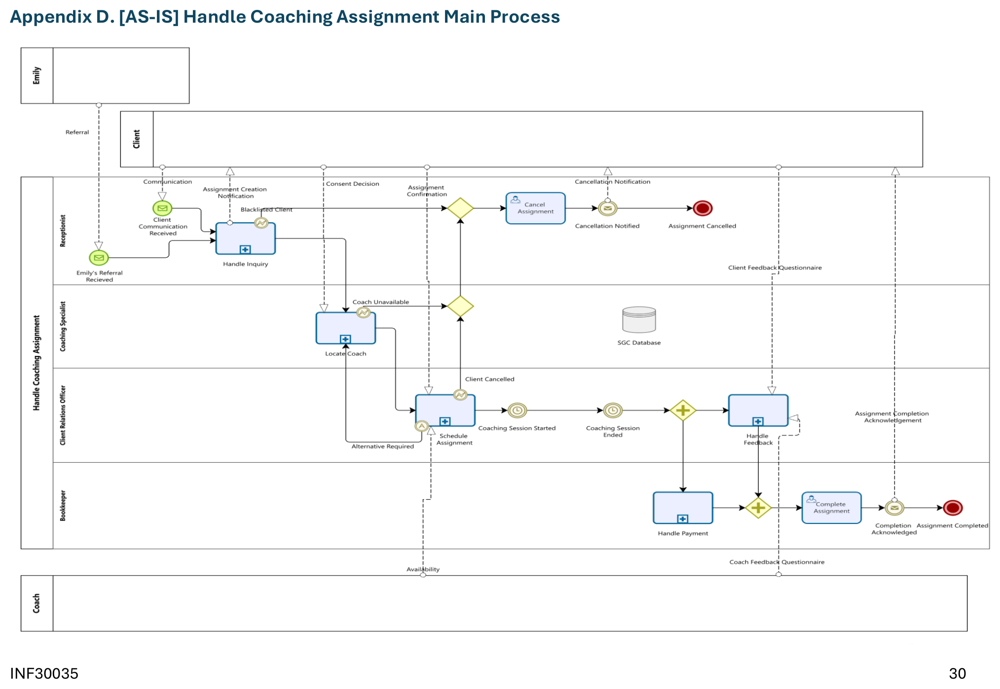
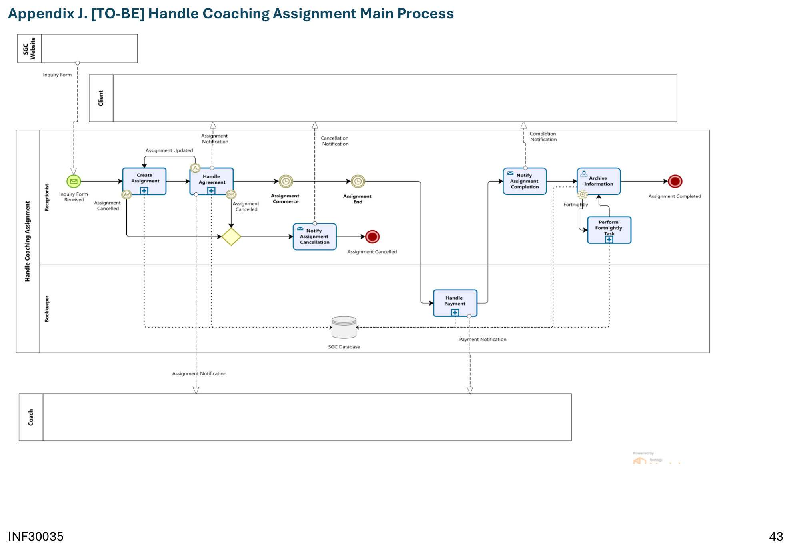
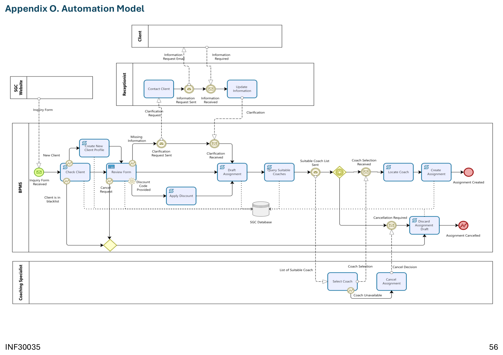

SGC runs a referral-based coaching service, but every assignment — from first inquiry to final payment — moved through a receptionist's inbox by hand. Our team modelled the current process end-to-end, diagnosed where it broke down, and redesigned it into a leaner, partly-automated workflow — captured at Level 2 BPMN, AS-IS to TO-BE to BPMS automation.
SGC matches clients with coaches through a referral network — new clients mostly arrive through "Emily," a referral partner whose clients get a discount. From there, a receptionist manually verifies the client, a coaching specialist locates and confirms an available coach, a client relations officer schedules the session, and a bookkeeper chases the invoice afterwards. Four different roles touch a single assignment before a dollar changes hands.
The bottleneck sits right in the middle: matching a client's requirements against a coach's skills, expertise and availability — then re-verifying that match every time a client's preferences shift or a coach's schedule changes. That back-and-forth is what the rest of this case study is about fixing.
Expanded from our Level 1 model in Assignment 1, this Level 2 BPMN diagram traces the full "Handle Coaching Assignment" process across five swimlanes — Emily, Client, Receptionist, Coaching Specialist, Client Relations Officer and Bookkeeper — from the moment a referral lands to the moment an assignment is marked complete.

Client inquiries, coach assignment and payment all run through manual verification and form-processing — the exact tasks automation is best at.
No automated reminders for coach payments or client invoices. Fragmented back-and-forth between staff, clients and coaches delays every follow-up.
Coaches sit underutilised while clients wait to be matched — scheduling gaps that directly work against SGC's 80% utilisation target.
With no centralised database, staff re-enter the same client and coach details across tools — introducing errors and blurring who owns what.
Selected using the Devil's Quadrangle to weigh quality, flexibility, time and cost against SGC's priorities — quality and flexibility lead, since client satisfaction is what the coaching business actually sells.
One centralised inquiry form replaces manual back-and-forth for client details.
Clear, non-overlapping roles so staff stop duplicating each other's work.
A 20% deposit moves before session confirmation, cutting bad debt and no-shows.
Blacklisted clients and unresponsive coaches are filtered out early, before they cost staff time.
One database for every coach profile, specialty and availability window, visible in real time.
Why quality and flexibility win — SGC competes on service quality in a relationship-driven coaching market. Time and cost still matter, but every best practice above was chosen to protect client experience first, and tightened our operations second.
The TO-BE model keeps SGC's existing team structure but replaces manual intake with an online inquiry form, folds coach information into one shared database, and re-sequences payment so a 20% deposit confirms the booking before anyone's calendar is blocked.

Client intake moves to the SGC website inquiry form. A 20% deposit now sits before "Assignment Commerce," not after. A new "Perform Fortnightly Task" loop keeps the database current instead of relying on ad-hoc updates.
This followed a tuning approach, not a rebuild — the same roles (Receptionist, Bookkeeper, Coach) stay in place. We're removing manual steps, not restructuring who does the work, to keep staff resistance low.
The receptionist in the AS-IS model absorbed client intake, assignment drafting and coordination almost single-handedly — a workload that research links directly to burnout and slower response times. The automation model moves that load into a Business Process Management System that checks, drafts and matches without waiting on a person.

Checks whether a client is new, existing or blacklisted; drafts the assignment; queries every suitable coach by requirement and availability; and auto-selects whoever has the least-congested schedule.
The coaching specialist only sees a case when it's genuinely ambiguous — an unclear requirement, a cancellation, or a coach declining the auto-match. Everything routine runs without them.
We used Lean Six Sigma to frame the diagnosis — Lean to strip out non-value-added steps like repeated manual verification, Six Sigma's DMAIC cycle to track down exactly where communication broke down and standardise the fix. The rollout itself follows a tuning change-management approach: incremental adjustments, not a structural overhaul, so SGC keeps serving clients while the new process beds in.
Targeted at the 80% utilisation goal and the new database workflow.
New tools introduced gradually alongside existing processes, not as a cutover.
Ongoing tracking against the utilisation target and client satisfaction signals.
The verdict
Marked against a Level 2 BPMN rubric covering report content, AS-IS/TO-BE modelling quality, and the BPMS automation logic — the modelling components are where this group scored strongest.
"Models are well presented, include all details of current processes. Well used level 2 BPMN symbols." — grader feedback on the AS-IS model